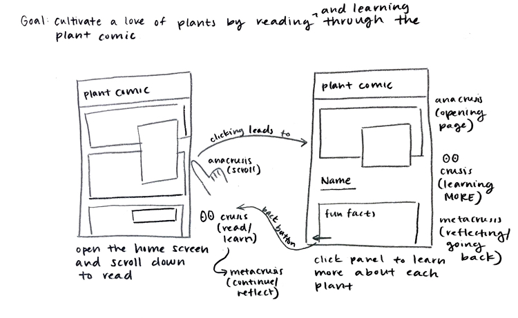
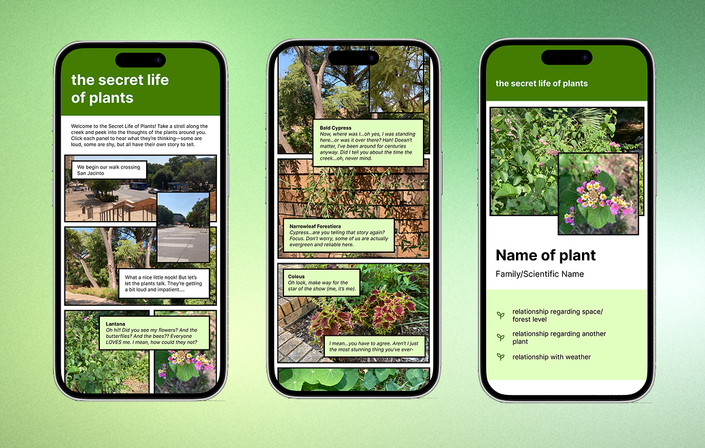

Creating a Comic Strip Plant Walk

overview
How can I shift UT students’ perspective of ordinary plants around them so that they become sources of interest and meaning?
I created a comic-style plant walk around UT’s Art Building to make learning about local plants fun and engaging. The playful format encourages people to slow down, notice, and connect with the landscape while turning an ordinary walk into a memorable experience.
user research
I did an autoethnography, made a persona, and visualized the user’s journey. Through research, I found that students are most engaged when learning about the plants in visually interesting, participatory ways—and that adding playful interaction can transform a short outdoor walk into a moment of genuine connection with nature.


creating a user flow
I explored different directions before deciding on a web comic as my interface. I wanted to use the grid in a creative way, and while I was initially a little uncertain about implementing my idea with code, I felt that it was ultimately doable. I was drawn to the idea of weaving narrative into the experience. I’m a big fan of storytelling, and I know that people generally don’t want to read huge novels, so a comic felt like a fun and unexpected way to “hook” users and make learning about plants more enjoyable. Unlike my other ideas, which relied on users already being interested in related topics, the comic format creates its own appeal through story and playfulness.
This decision helped me move from a vague concept to a clear design goal: learning through a medium that feels lighthearted and surprising. My persona reinforced this choice by highlighting users’ need for understanding, participation, and leisure, all of which could be met through a comic. Creating an early hypothesis and sketch also helped me visualize what I wanted to design and identify the key aspects I needed to include.

With my concept defined, I created a mid-fidelity prototype with annotations in Figma to map out the structure and flow of the interface. This helped me test how the comic-style narrative and plant information pages would connect.
Alongside the prototype, I built a style guide to establish consistency in typography, and color. Together, these gave me a strong foundation for moving into implementation.

implementation
After prototyping, I built the interface using HTML and CSS. This step brought the comic-style design to life, translating the narrative flow and plant pages from static mockups into an interactive experience.

*created for mobile, but works on desktop too!
final thoughts
This project was a rewarding opportunity to go through the full design process—from research to ideation, prototyping, and finally implementation. I especially enjoyed designing for the user in a unique way, using comics to create an engaging and playful experience. It was also exciting to see my ideas come to life, and I found a lot of satisfaction in building the interface with HTML and CSS. The project not only strengthened my design process skills but also deepened my appreciation for turning creative concepts into working experiences.